UCES 2026 · Lic. Marisa Soledad Lagraña · Resumen del apunte de cátedra
U1. Economía como ciencia · Escasez y necesidad de elegir · Necesidades · Clasificación de bienes · Sistema económico (tipos, preguntas, elementos) · Flujo circular · FPP (costo oportunidad, desplazamientos) · Modelos económicos · Positiva/Normativa · PIB vs IN · Equilibrio macro.
U2. Consumidor (supuestos) · Curva de indiferencia · TMS decreciente · Equilibrio consumidor · Restricción presupuestaria · Demanda (movs, desplaz, efectos) · Excedente · Elasticidad precio.
→ Taller de fórmulas paso a paso → Mapa mental interactivo → 3 parciales simulados
Esta página se puede instalar como app. En Chrome/Edge (PC): ícono de instalación en la barra de direcciones. En Android: menú → "Instalar app". En iPhone: botón compartir → "Añadir a pantalla de inicio". Una vez cargada la primera vez con internet, queda disponible offline (texto, imágenes, video y mapa mental).
La palabra "economía" viene del griego oikonomia (oikos: casa; nomos: ley). Se ocupa de las cuestiones que surgen en relación con la satisfacción de necesidades de individuos y sociedad, dadas la limitación de recursos. También se la llama "ciencia de la elección".
El problema económico central surge porque las necesidades humanas son ilimitadas mientras que los recursos son limitados. La escasez no es un problema tecnológico sino la disparidad entre deseos y medios disponibles.
Toda disciplina científica necesita tres requisitos: objeto de estudio, método, esquema de validación. La economía cumple los tres: su objeto es el dilema necesidades/recursos escasos; sus métodos son hipotético-deductivo, inductivo y abductivo; valida sus teorías por descripción, explicación y predicción de hechos económicos.
| Tipo | Objeto | Ejemplos |
|---|---|---|
| Formales | Objetos ideales creados por abstracción | Lógica, Matemática |
| Naturales | Fenómenos de la naturaleza | Física, Química, Biología |
| Sociales | Comportamiento humano en sociedad | Economía, Derecho, Sociología |
Al ser escasos los recursos, toda sociedad debe elegir. Elegir implica renunciar: lo que se resigna se llama costo de oportunidad (ver tema 7). De esta limitación surgen tres interrogantes que todo sistema económico debe responder:
Las sociedades eligen producir más de aquellos bienes para los que tienen ventajas comparativas (factores productivos apropiados). En economías de mercado estas decisiones se toman vía "votos monetarios" de los consumidores.
Sensación física o psíquica de carencia de algo, junto al deseo de satisfacerla.
| Criterio | Tipos | Detalle |
|---|---|---|
| Urgencia | Primarias / Secundarias | Esenciales vs. de segundo orden |
| Asiduidad | Regulares / Ocasionales | Ritmo fijo vs. sin regularidad |
| Tiempo | Presentes / Futuras | Resolverse ya vs. previsión (ahorro) |
| Sujeto | Individuales / Colectivas | Del individuo vs. resueltas por el Estado |
Es quien está llamado a resolver los problemas económicos. No todas las personas físicas lo son (un niño no puede por sí mismo), y no sólo las personas físicas lo son (empresas y asociaciones también).
Un bien económico es todo medio apto para satisfacer una necesidad. Requisitos: capaz de satisfacer, escaso (requiere sacrificio), accesible.
| Criterio | Clasificación |
|---|---|
| Naturaleza | Materiales (bienes) / Inmateriales (servicios) |
| Abundancia | Libres (aire) / Económicos (reproducibles) / Raros (obras únicas) |
| Destino | De consumo (directos) / De producción (indirectos, instrumentales) |
| Durabilidad | No durables (se agotan en el primer uso) / Durables (satisfacen muchas veces) |
| Disponibilidad | Presentes / Futuros |
| Propiedad | Privados / Públicos (indivisibles entre toda la comunidad) |
| Según ingreso | Normales (suben con el ingreso) / Inferiores (bajan con el ingreso) |
Conjunto de relaciones básicas, técnicas e institucionales que caracterizan la organización económica de una sociedad. Es la forma en que cada sociedad decide administrar los recursos disponibles.
| Sistema | ¿Qué? | ¿Cómo? | ¿Para quién? |
|---|---|---|---|
| Capitalista / de mercado | Lo que demanda el mercado | Según eficiencia y competencia | Para quien pueda pagar |
| Planificación central | Lo que decide el Estado | Planes estatales | Según criterio político |
| Mixto | Mercado + Estado | Regulación + iniciativa privada | Mercado + redistribución |
Capitalista: propiedad privada y libre mercado. Los precios surgen de la interacción oferta/demanda. Riesgo: monopolios y concentración de poder económico.
Planificación central: el Estado asigna recursos y fija precios por decreto (ex URSS). Buscaba asegurar bienestar social pero resultó poco flexible.
Mixto: el privado hace la mayor parte y el Estado se reserva sectores estratégicos (energía, petróleo), regula con leyes, política fiscal y pactos. Es el modelo dominante hoy, incluyendo Argentina.
Política económica: acciones del gobierno para gestionar la economía (fiscal, monetaria). Objetivos corto plazo: pleno empleo, estabilidad de precios, balanza de pagos. Largo plazo: crecimiento, distribución, desarrollo regional.
Economía política: disciplina que estudia cómo los gobiernos influyen en la producción y distribución de recursos. Incluye variables sociológicas y políticas.
Representa cómo circulan bienes, factores y dinero entre los agentes de la economía. Hay dos flujos superpuestos en sentido contrario:
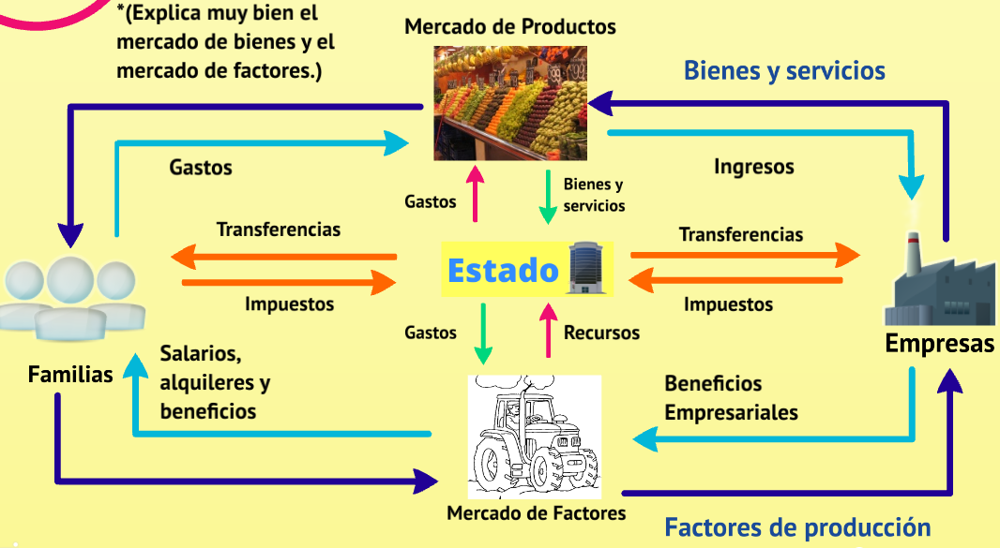
La FPP o curva de transformación muestra la cantidad máxima posible de bienes y servicios que una economía puede producir con los recursos y la tecnología disponibles, y dadas las cantidades de otros bienes que también produce.
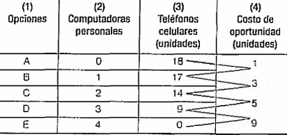
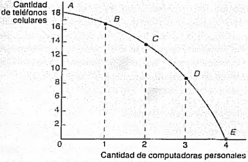
El costo de oportunidad de una cosa es aquello a lo que se renuncia para obtenerla. En la FPP, producir más de un bien tiene un costo en términos del otro bien que deja de producirse.
La FPP es cóncava al origen porque los recursos no son igual de productivos en todos los bienes: a medida que se reasignan más recursos a un bien, cada unidad adicional cuesta más unidades sacrificadas del otro (costo de oportunidad creciente).
Si la capacidad productiva aumenta, la frontera se desplaza hacia afuera (crecimiento). Si disminuye, hacia adentro. Causas:
Un modelo económico es una simplificación y abstracción de la realidad que, mediante supuestos, argumentos y conclusiones, explica una determinada proposición o aspecto de un fenómeno más amplio.
Los modelos suponen que los agentes son racionales: toman decisiones coherentes con sus preferencias y buscan maximizar alguna magnitud. Las teorías no se evalúan por lo realista de sus supuestos, sino por la validez de sus predicciones.
Cláusula que consiste en suponer todas las demás variables constantes. Si estudio el efecto del precio del auto sobre su demanda, supongo que ingresos, gustos y precios de otros bienes no cambian.
| Tipo | Estudia |
|---|---|
| Microeconómicos | Mercados específicos y agentes individuales (yerba, autos, una familia). |
| Macroeconómicos | Variables agregadas (PIB, inflación, consumo agregado, exportaciones). |
Para estudiar e interpretar los hechos, la economía se divide en dos ramas:
| Positiva | Normativa | |
|---|---|---|
| Pregunta | ¿Qué es o podría ser? | ¿Qué debería ser? |
| Enfoque | Descripción objetiva y relaciones de causalidad | Juicios de valor, recomendaciones |
| Comprende | Economía descriptiva + Teoría económica (micro y macro) | Política económica |
Positiva:
Normativa:
Los campos positivo y normativo se mezclan: cualquier recomendación de política económica se apoya en un análisis positivo pero lo interpreta según un marco de valores.
El PIB se fija en dónde se produce (territorio). El Ingreso Nacional se fija en quién lo genera (nacionalidad del factor).
Valor monetario de todos los bienes y servicios finales producidos dentro del territorio de un país en un período. Es un indicador del tamaño de la economía. No incluye la producción para consumo propio ni la economía sumergida.
Suma de todos los ingresos que perciben los factores productivos nacionales en un período: salarios + ganancias + intereses + rentas.
| Caso | PIB argentino | IN argentino |
|---|---|---|
| Argentino trabajando en Chile | No | Sí |
| Chileno trabajando en Argentina | Sí | No |
Cantidad total que los sectores de la economía están dispuestos a gastar a cada nivel de precios. La curva tiene pendiente negativa: si los precios bajan, los agentes compran más.
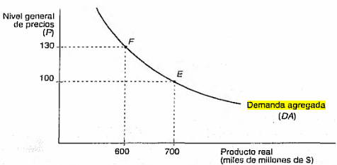
Relación entre el nivel general de precios y la cantidad total producida. Curva con pendiente positiva: al aumentar la producción, suben los costos unitarios (más trabajadores menos experimentados, equipos menos adecuados, factores más caros, salarios nominales) y con ellos el nivel general de precios.
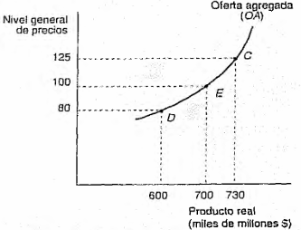
Combinación de PIB real y nivel general de precios que satisface a demandantes y vendedores. Es el punto de intersección entre OA y DA.
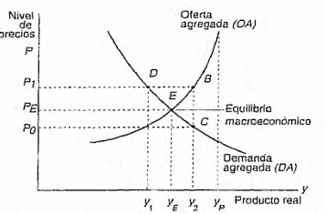
El consumidor es una persona u organización que adquiere bienes y servicios de los productores para satisfacer sus necesidades. El análisis económico estudia cómo toma sus decisiones de compra.
Dadas dos canastas, el consumidor siempre prefiere la que contiene más de algún bien y no menos de ningún otro. Garantiza que va a gastar todo su ingreso.
Muestra el conjunto de combinaciones de dos bienes ante las cuales el consumidor es indiferente, porque cada una le reporta el mismo nivel de utilidad.
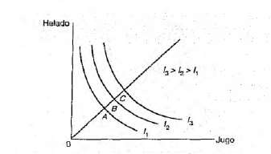
Conjunto de infinitas curvas de indiferencia que representan las preferencias de un consumidor. Los mapas de dos consumidores distintos no tienen por qué ser iguales: cada uno tiene sus propios gustos.
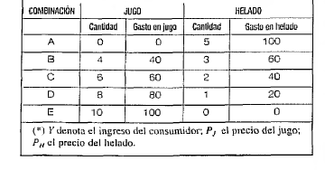
La TMS mide cuánto de un bien está dispuesto el consumidor a sacrificar por una unidad adicional del otro, manteniendo constante la utilidad. Es la pendiente de la curva de indiferencia (en valor absoluto).
TMSxy y TMSyx no son lo mismo: son recíprocos entre sí.
A medida que el consumidor se mueve por la curva de izquierda a derecha (consume más X y menos Y), la TMS disminuye. La explicación surge de la utilidad marginal decreciente:
Esta "ley del decrecimiento de la relación marginal de sustitución" es la razón por la cual las curvas de indiferencia son convexas al origen. Refleja la idea intuitiva de que la diversidad en el consumo se considera preferible a la concentración extrema.
Es el punto óptimo donde el consumidor maximiza su utilidad dada su restricción presupuestaria. Gráficamente, es el punto de tangencia entre la recta presupuestaria y la curva de indiferencia más alta alcanzable.
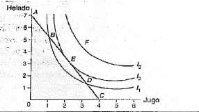
En el punto de tangencia, la pendiente de la curva de indiferencia (la TMS) se iguala a la pendiente de la recta presupuestaria (la razón de precios):
De ahí se obtiene la Ley de igualdad de las utilidades marginales ponderadas:
Significa que el último peso gastado en X da la misma utilidad adicional que el último peso gastado en Y. Si no fuera así, el consumidor podría reasignar gasto y mejorar su utilidad, así que no estaría en equilibrio.
La recta de balance (o línea de presupuesto) muestra las combinaciones máximas de dos bienes que el consumidor puede comprar, dados su ingreso y los precios del mercado.
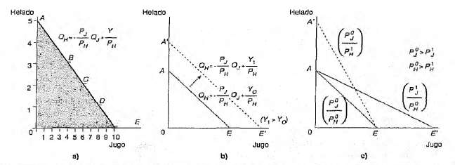
La pendiente es igual al precio relativo −Px/Py: indica cuántas unidades de Y hay que sacrificar para obtener una unidad adicional de X. Cuanto más caro sea X respecto a Y, más Y hay que resignar. Es constante a lo largo de toda la recta porque los precios los fija el mercado.
La demanda es la cantidad de un bien que los consumidores desean y pueden comprar a cada precio. Demandar es estar dispuesto a comprar; comprar es efectuar la adquisición.
Ley de la demanda: relación inversa entre el precio de un bien y la cantidad demandada. Si el precio sube, la cantidad baja, y viceversa.
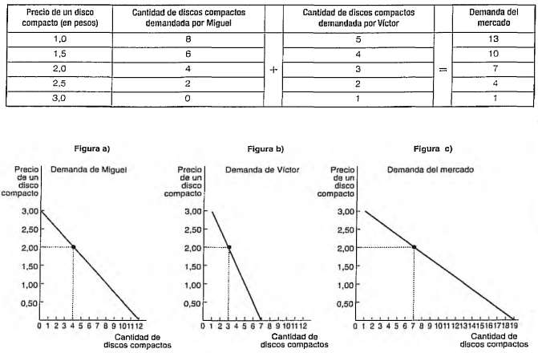
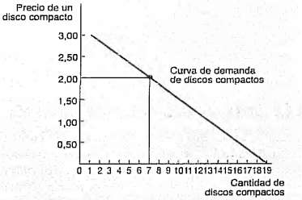
Los dos efectos explican la pendiente negativa de la curva de demanda y se refuerzan entre sí:
Diferencia entre la utilidad total de un bien y su valor total de mercado. Surge porque el consumidor recibe más de lo que paga por el bien, y tiene origen en el decrecimiento de la utilidad marginal.
Otra forma: es la diferencia entre la disposición a pagar (máximo que estaría dispuesto a entregar) y el precio efectivamente pagado en el mercado.
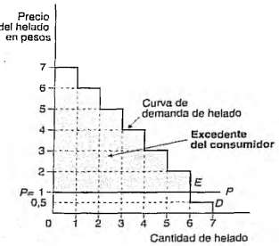
Si el consumidor pagaría 7, 6, 5, 4, 3, 2 pesos por el primer, segundo... sexto kilo de helado y el precio de mercado es 1 peso/kilo:
Valor total = 7+6+5+4+3+2 = 27 pesos. Gasto efectivo = 6 kilos × 1 = 6 pesos. Excedente = 27 − 6 = 21 pesos.
Mide el grado en que la cantidad demandada responde a una variación del precio. Una elasticidad alta indica alta sensibilidad; una baja, poca sensibilidad.
Por la ley de demanda, numerador y denominador tienen signo opuesto. Por convención se toma el valor absoluto para trabajar con números positivos.
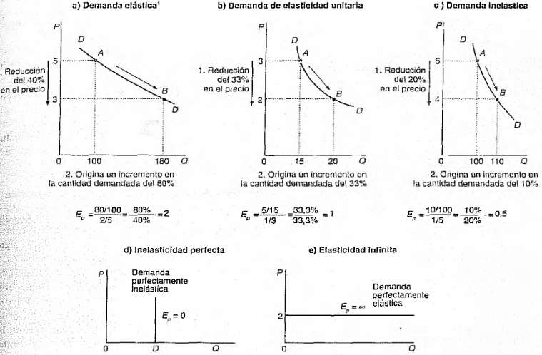
| Tipo | Valor | Ejemplo |
|---|---|---|
| Elástica | Ep > 1 | Bienes de lujo, viajes, autos |
| Unitaria | Ep = 1 | Caso teórico |
| Inelástica | Ep < 1 | Primera necesidad: pan, leche |
| Perf. inelástica | Ep = 0 | Insulina, sal, medicamentos vitales |
| Perf. elástica | Ep = ∞ | Sustitutos perfectos en competencia |
Cuando los cambios no son pequeños, la elasticidad varía según el punto inicial. Se usa el método del punto medio:
En una demanda lineal, la pendiente ΔQ/ΔP es constante, así que la elasticidad varía a lo largo de la curva según P/Q: es alta con precios altos y baja con precios bajos.
El ingreso total del vendedor es IT = P · Q. Cuando cambia el precio, la elasticidad determina qué pasa con el IT:
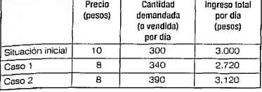
| Si el precio baja y la demanda es… | El IT… |
|---|---|
| Elástica (E > 1) | Aumenta |
| Unitaria (E = 1) | No cambia (IT máximo) |
| Inelástica (E < 1) | Disminuye |
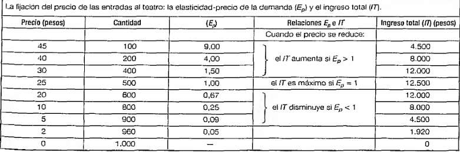
Conocer la elasticidad es clave para decidir precios. Con demanda inelástica (pocos sustitutos, primera necesidad): subir el precio aumenta el IT. Con demanda elástica (lujo, muchos sustitutos): subir el precio hace perder clientes más rápido que lo que se gana; conviene bajar o diferenciarse por marca para volver la demanda más inelástica. Por eso las marcas premium (Apple, Rolex) trabajan el branding: buscan que la demanda sea menos sensible al precio.
Mide la influencia de una variación del precio de un bien sobre la cantidad demandada de otro.
| Signo | Relación | Ejemplo |
|---|---|---|
| Positiva | Sustitutos | Coca/Pepsi, Uber/taxi |
| Negativa | Complementarios | Auto/nafta, yerba/termo |
| Nula | Independientes | Pan/zapatillas |
| Valor | Tipo de bien |
|---|---|
| Ey > 1 | Lujo (sube más que proporcional con el ingreso) |
| 0 < Ey < 1 | Normal necesario |
| Ey < 0 | Inferior (baja con el ingreso) |
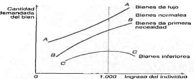
Curva de Engel (Ernst Engel, siglo XIX): revela patrones de consumo según el ingreso. Las empresas la usan para segmentar mercados y adaptar estrategias de precios.
YouTube elasticidad Cruzada, ingreso, Engel
Todas las fórmulas del parcial con el significado de cada variable y las interpretaciones de cada caso posible. Usalo como hoja de consulta rápida durante el estudio.
| Punto | Dónde está | Qué significa | Por qué |
|---|---|---|---|
| Eficiente | Sobre la curva | Usa todos los recursos al máximo | No se puede producir más de un bien sin resignar otro |
| Ineficiente | Interior (debajo) | Recursos ociosos o mal asignados | Hay desempleo, capacidad productiva sin usar, o producción por debajo del potencial |
| Inalcanzable | Exterior (arriba y a la derecha) | Excede la capacidad productiva actual | Los recursos y la tecnología actuales no alcanzan para llegar ahí |
Porque el costo de oportunidad es creciente: los recursos no son igual de productivos en todos los bienes. A medida que reasigno más recursos al bien X, cada unidad adicional cuesta más unidades sacrificadas de Y (los recursos menos adecuados para X van quedando y son menos eficientes).
| Dirección | Qué significa | Causas |
|---|---|---|
| Hacia afuera (derecha/arriba) | Crecimiento económico: se puede producir más de ambos bienes | Avances tecnológicos · Más recursos naturales · Más capital humano (educación, capacitación) · Mayor fuerza laboral |
| Hacia adentro (izquierda/abajo) | Decrecimiento: se produce menos de ambos | Catástrofes · Destrucción de capital · Pérdida de fuerza laboral · Retroceso tecnológico |
| Rotación asimétrica | Crecimiento en un solo sector | Avance tecnológico específico (ej: se puede producir mucho más X pero el Y no cambia) |
| Situación | Qué significa |
|---|---|
| IN > PIB (RRN > RRE) | Los nacionales afuera ganan más que los extranjeros acá. País exportador de factores (típico de países con diáspora productiva). |
| IN < PIB (RRN < RRE) | Los extranjeros acá ganan más que los nacionales afuera. País receptor de inversión extranjera. |
| IN = PIB (RRN = RRE) | Flujos de rentas compensados. Economía cerrada o equilibrada en términos de factores internacionales. |
| Caso | Qué significa |
|---|---|
| X − M > 0 | Superávit comercial: el país exporta más de lo que importa. Fortalece la moneda nacional. |
| X − M < 0 | Déficit comercial: el país importa más de lo que exporta. Puede llevar a endeudamiento externo y devaluación. |
| X − M = 0 | Balanza equilibrada: no hay presión cambiaria por el comercio. |
A medida que aumenta la producción, los costos unitarios suben por tres razones: (1) se contratan trabajadores menos experimentados y se usan equipos menos adecuados, (2) los factores escasos como la tierra suben de precio, (3) los salarios nominales aumentan porque hay menos trabajadores desocupados. Al subir los costos, las empresas elevan los precios. Por eso, más producción trae más precios.
El equilibrio se alcanza en el punto de intersección de OA y DA. En ese punto las empresas están dispuestas a producir y vender exactamente lo que los demandantes están dispuestos a comprar, al nivel de precios que iguala costos unitarios con lo que el mercado acepta pagar.
| Característica | Por qué |
|---|---|
| Convexa al origen | Por la TMS decreciente: a medida que el consumidor tiene mucho de X, valora cada X adicional menos, así que está dispuesto a sacrificar menos Y por cada X más. Refleja la preferencia por combinaciones balanceadas. |
| Pendiente negativa | Para mantener la misma utilidad: si aumento el consumo de un bien tengo que reducir el del otro (si no, me iría a una curva más alta y cambiaría de nivel de utilidad). |
| No se cortan entre sí | Si dos curvas se cruzaran, el punto de cruce tendría dos niveles de utilidad distintos al mismo tiempo. Contradicción de preferencias. |
| Más alejadas del origen = más utilidad | Supuesto de insaciabilidad: el consumidor prefiere siempre tener más de algún bien. Más bienes = más satisfacción. |
Al moverse por la curva hacia la derecha (más X, menos Y):
| Situación | Qué hacer | Por qué |
|---|---|---|
| UMgx/Px > UMgy/Py | Consumir más X y menos Y | Cada peso gastado en X da más utilidad. Al consumir más X, UMgx baja, y al consumir menos Y, UMgy sube, hasta igualarse. |
| UMgx/Px < UMgy/Py | Consumir más Y y menos X | Cada peso gastado en Y da más utilidad. Ajusto en sentido opuesto al caso anterior. |
| UMgx/Px = UMgy/Py | Mantener la canasta actual | El consumidor está maximizando: no hay reasignación posible que mejore la utilidad. |
| Qué cambia | Efecto en la recta | Interpretación |
|---|---|---|
| ↑ Ingreso (M) | Se desplaza paralela hacia afuera | Puede comprar más de ambos bienes. La pendiente no cambia porque los precios relativos no cambian. |
| ↓ Ingreso (M) | Se desplaza paralela hacia adentro | Puede comprar menos de todo. Misma pendiente. |
| ↓ Precio de un solo bien (Px) | Rota pivotando sobre la ordenada al origen (hacia afuera sobre el eje X) | Puede comprar más X con el mismo ingreso; el máximo de Y no cambia. Pendiente más chica (menos inclinada). |
| ↑ Precio de un solo bien (Px) | Rota pivotando sobre la ordenada al origen hacia adentro | Puede comprar menos X; el máximo de Y sigue igual. Pendiente más grande (más inclinada). |
| Ambos precios ↑ o ↓ proporcionalmente | Se desplaza paralela (equivalente a cambio de ingreso) | Los precios relativos no cambian, sólo cambia el poder adquisitivo total. |
| Movimiento sobre la curva | Desplazamiento de la curva | |
|---|---|---|
| Qué cambia | Precio del propio bien | Cualquier otro factor (Y, PB, G, N, expectativas) |
| Efecto | Paso de un punto a otro sobre la misma curva | Toda la curva se corre a derecha (↑ demanda) o izquierda (↓ demanda) |
| Lenguaje correcto | "Cambia la cantidad demandada" | "Cambia la demanda" (toda) |
| Factor | Dirección del desplazamiento |
|---|---|
| ↑ Ingreso, bien normal | Derecha (aumenta demanda) |
| ↑ Ingreso, bien inferior | Izquierda (disminuye demanda) |
| ↑ Precio de un sustituto | Derecha (la gente reemplaza con el bien nuestro) |
| ↑ Precio de un complementario | Izquierda (se consume menos del bundle) |
| Cambio de moda a favor | Derecha |
| Más consumidores (crece N) | Derecha |
| Expectativa de suba futura de P | Derecha ahora (acumulan stock) |
| Qué dice | Por qué hace caer la Q demandada al subir P | |
|---|---|---|
| Efecto sustitución | Cuando sube el precio de un bien, el consumidor lo reemplaza por otros más baratos | Busca satisfacer la misma necesidad al menor costo. Se reduce el consumo del bien encarecido. |
| Efecto ingreso | Cuando sube el precio, con el mismo ingreso monetario se pueden comprar menos bienes en total | Cae el ingreso real. Se compra menos de todo, incluido el bien que subió. |
Los dos efectos se refuerzan entre sí: ambos empujan la cantidad demandada hacia abajo cuando sube el precio. Por eso la curva de demanda tiene pendiente negativa.
Existe porque la utilidad marginal es decreciente. La primera unidad de un bien le da mucha satisfacción al consumidor, la segunda un poco menos, y así hasta la última que apenas vale lo que cuesta. Como paga un único precio por todas, las primeras unidades dejan un "sobrante de valor" que se acumula en el excedente.
| Situación | Excedente |
|---|---|
| Curva de demanda perfectamente elástica (horizontal al precio) | Excedente = 0 (no hay área entre curva y precio) |
| Precio = 0 | Excedente máximo (toda el área bajo la curva) |
| Precio ≥ máxima disposición a pagar | Excedente = 0 (no se compra nada) |
| Caso | Valor | Interpretación | Ejemplo típico |
|---|---|---|---|
| Elástica | Ep > 1 | Q reacciona más que proporcionalmente al precio. Muy sensible. | Bienes de lujo, viajes, marcas sustituibles, autos |
| Unitaria | Ep = 1 | Q cambia exactamente lo mismo que P (en %). El IT se mantiene constante. | Caso teórico de referencia |
| Inelástica | Ep < 1 | Q reacciona menos que proporcionalmente. Poco sensible. | Bienes de primera necesidad: leche, pan, combustible |
| Perfectamente inelástica | Ep = 0 | Q no cambia ante cambios de precio. Curva vertical. | Insulina, sal, medicamentos vitales sin sustituto |
| Perfectamente elástica | Ep = ∞ | Cualquier mínima variación de precio colapsa (o dispara) la demanda. Curva horizontal. | Sustitutos perfectos en competencia (ej: commodities) |
| Factor | Efecto |
|---|---|
| Tipo de necesidad | Primera necesidad → inelástica. Lujo → elástica. |
| Disponibilidad de sustitutos | Muchos sustitutos cercanos → más elástica. Pocos sustitutos → más inelástica. |
| Proporción del ingreso gastada en el bien | Si pesa mucho en el presupuesto → más elástica. Si pesa poco → más inelástica. |
| Período considerado | Largo plazo → más elástica (da tiempo a adaptar hábitos y tecnología). Corto plazo → más inelástica. |
| Situación | Baja el precio | Sube el precio |
|---|---|---|
| Elástica (Ep > 1) | IT aumenta | IT disminuye |
| Unitaria (Ep = 1) | IT no cambia (máximo) | IT no cambia (máximo) |
| Inelástica (Ep < 1) | IT disminuye | IT aumenta |
Regla mnemotécnica: el IT se maximiza donde la elasticidad es unitaria. A la izquierda (zona elástica) conviene bajar precio; a la derecha (zona inelástica) conviene subir precio.
| Signo | Relación | Interpretación | Ejemplos |
|---|---|---|---|
| Eij > 0 (positiva) | Sustitutos | Al subir el precio de j, la gente compra más de i (lo reemplaza) | Coca/Pepsi, Uber/taxi, té/café, manteca/margarina |
| Eij < 0 (negativa) | Complementarios | Al subir el precio de j, baja la demanda de i (se consumen juntos) | Auto/nafta, yerba/termo, impresora/cartuchos, PS5/juegos |
| Eij = 0 (nula) | Independientes | El precio de j no afecta la demanda de i | Pan/zapatillas, té/libros |
| Valor | Tipo de bien | Interpretación | Ejemplos |
|---|---|---|---|
| Ey > 1 | Bien de lujo | La demanda crece más que proporcionalmente con el ingreso | Joyas, viajes al exterior, autos premium, cena fine dining |
| 0 < Ey < 1 | Bien normal necesario | La demanda crece pero menos que proporcionalmente con el ingreso | Carne, ropa básica, electricidad |
| Ey = 0 | Bien independiente del ingreso | La demanda no varía con el ingreso | Sal (teórico, raro en la práctica) |
| Ey < 0 | Bien inferior | Al subir el ingreso, baja la demanda: se reemplaza por algo mejor | Pan duro, transporte público, marcas económicas |
| Bien | Pendiente de la curva de Engel | Lectura |
|---|---|---|
| Normal (lujo o necesario) | Positiva | Más ingreso → más consumo del bien |
| Inferior | Negativa (a partir de cierto ingreso) | Más ingreso → menos consumo: se sustituye por algo de mayor calidad |
| Inicialmente normal, luego inferior | Positiva al principio, después negativa | A ingresos bajos aumenta con el ingreso; a partir de un umbral, el consumidor ya puede pagar algo mejor y deja de consumirlo |
Conocer la elasticidad ingreso del producto te dice a qué segmento apuntar y cómo reaccionará el negocio ante ciclos económicos. Ey > 1: producto de lujo, sensible a recesiones (si la economía cae, cae la demanda con fuerza). 0 < Ey < 1: bien normal necesario, demanda más estable. Ey < 0: bien inferior, en recesión aumenta la demanda (la gente baja de categoría). Ejemplo práctico: Coca-Cola es Ey chico y casi estable; Louis Vuitton es Ey alto y volátil; segunda marca de supermercado es Ey negativa y crece en crisis.
Todas las fórmulas listas para copiar en una planilla. Las celdas de ejemplo (A2, B3, etc.) son genéricas. Reemplazalas por las coordenadas reales de tu Excel. Punto y coma (;) separador funciona en la mayoría de Excel en español; si tu versión usa coma, cambialo por ,.
Para que Excel interprete el signo = como fórmula, la celda debe empezar exactamente con ese carácter. Si copiás y pegás y no calcula, seleccioná la celda, tocá F2 y Enter, o cambiá el formato de la celda a "General".
Setup sugerido:
| A | B | C | D | |
|---|---|---|---|---|
| 1 | Opción | Bien X | Bien Y | CO de X |
| 2 | A | 0 | 20 | — |
| 3 | B | 1 | 18 | fórmula ↓ |
| 4 | C | 2 | 14 | ... |
Copiás esa fórmula hacia abajo (arrastrás del cuadradito en la esquina inferior derecha de la celda) y Excel calcula el CO para cada fila automáticamente.
Setup: B2=C, B3=I, B4=G, B5=X, B6=M.
Setup: B2=X1, C2=Y1, B3=X2, C3=Y2 (dos puntos sobre la misma curva de indiferencia).
O bien, si tenés las utilidades marginales directamente:
Setup: B2=UMgX, B3=Px, B4=UMgY, B5=Py.
Setup: B2=M (ingreso), B3=Px, B4=Py.
Setup: B2=P1, C2=Q1, B3=P2, C3=Q2 (dos puntos de la curva de demanda).
Setup: B2=P, C2=Q, B3=Elasticidad precio.
Setup: B2=Pj1, C2=Qi1, B3=Pj2, C3=Qi2 (precio del bien J y cantidad del bien I).
Setup: B2=Y1, C2=Q1, B3=Y2, C3=Q2 (ingreso del consumidor y cantidad demandada).
Setup: columna A = disposición a pagar por cada unidad (A2:A10). B2 = precio de mercado.
Sugerencia de estructura para una sola hoja que te sirva como calculadora durante la práctica:
| Hoja | Contenido |
|---|---|
| FPP | Tabla de opciones con bienes X e Y + columna de costo de oportunidad con fórmulas relativas |
| Macro | Celdas para PIB, RRN, RRE, C, I, G, X, M. Fórmulas que calculen IN, DA, exportaciones netas y la interpretación |
| Consumidor | Bloque con M, Px, Py, UMgx, UMgy. Calculo de UMg ponderadas, verificación de equilibrio, máximos de la recta presupuestaria |
| Elasticidad | Bloques con P1, Q1, P2, Q2. Cálculo de Ep básica, arco, punto. Clasificación automática. IT y recomendación de precio |
| Excedente | Columna de disposiciones a pagar + celda de precio de mercado. Q comprada, valor total, gasto, excedente |
Con esto podés meter los datos de cualquier ejercicio del parcial y Excel te devuelve todos los resultados y clasificaciones automáticamente.